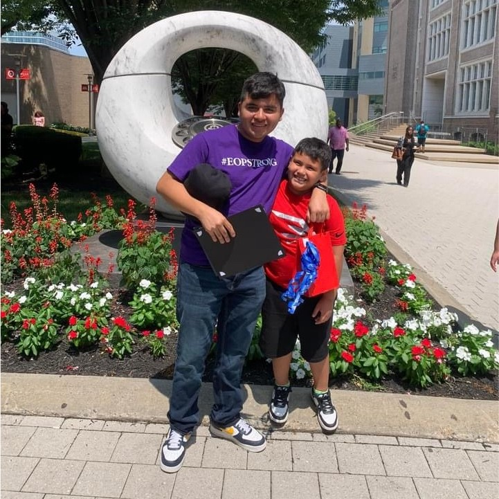

About Us
Club Tamid is a prestigious student organization that bridges the gap between academic excellence and real-world business experience. We provide hands-on consulting experience, professional development, and networking opportunities to help students thrive in their future careers.
Our mission is to empower the next generation of business leaders through practical experience, mentorship, and a strong professional network.
Meet Our E-Board
John Pork
President
Leading Club Tamid's initiatives with a focus on expanding our impact and fostering meaningful partnerships within the business community.
B.S. in Finance, Class of 2025
Carlos Landaverde
Vice President of Web Development
Carlos Landaverde is a Computer Science and Mathematics major with a strong passion for problem-solving and technology. At TAMID Beta at NJIT, he built and actively maintains our chapter’s website, demonstrating his dedication and technical expertise. He’s passionate about his role, consistently improving the site’s design, functionality, and content to better represent our growing community.
B.S. in Computer Science and Math, Class of 2028

Sneh Bhatt
Co-Vice President of Development
No description yetNo description yetNo description yetNo description yetNo description yetNo description yetNo description yetNo description yetNo description yetNo description yetNo description yetNo description yetNo description yetNo description yetNo description yetNo description yetNo description yetNo description yetNo description yetNo description yet
B.S. in Computer Science, Class of 2028
Ben Giralt
Co-Vice President of Development
No description yetNo description yetNo description yetNo description yetNo description yetNo description yetNo description yetNo description yetNo description yetNo description yetNo description yetNo description yetNo description yetNo description yetNo description yetNo description yetNo description yetNo description yetNo description yetNo description yet
B.S. in Math, Class of 2028